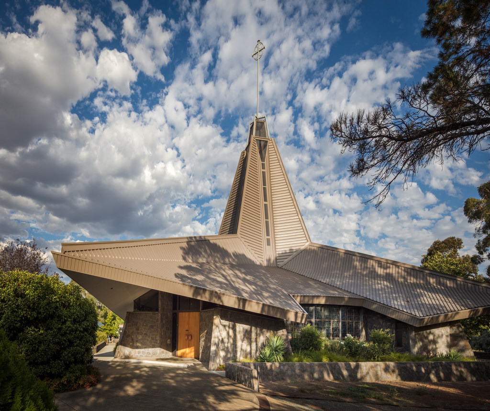
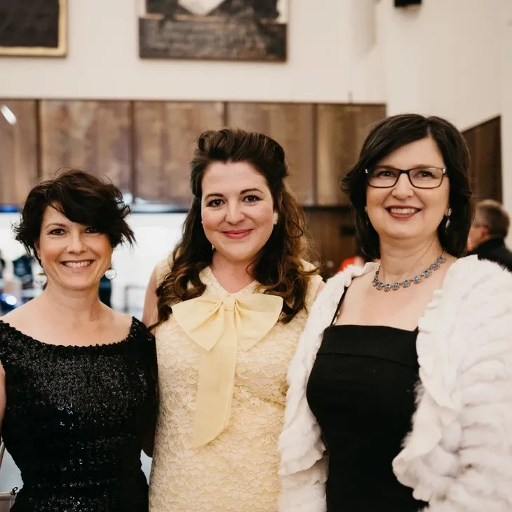

What's so special about Canberra?
Canberra is a young city with a rich architectural legacy. With major boom periods in the 1920s and again from the
1950s-1980s – the architectural aesthetic of the city is eclectic, but deliberately cohesive.
The mid-late twentieth century period of development in Canberra, specifically during the National Capital Development
Commission’s (NCDC) oversight (1958-1989) has not been widely celebrated or recognised by the Canberra community.
Major developments not only in residential, but civic and community buildings saw the frequent involvement of architects
now considered pioneers of the modernist movement, and the construction of a key collection of iconic and unique
mid-century buildings in Australia.
Many of these structures, which make an irreplaceable contribution to Canberra, have already been lost and many face
risk of being lost in the near future.
So we at Canberra Modern are here to help by engaging Canberra and Australia with their contemporary National Capital.

Who are Canberra Modern?
Edwina Jans, Amy Jarvis & Rachel Jackson
Canberra Modern is a passionate team of heritage and design practitioners who have a genuine love for the city in which
they live.
Edwina Jans is an archaeologist, museums and cultural heritage expert who works with the ACT Government. Edwina
specialises in education, communication and innovative engagement for heritage places.
Amy Jarvis is a heritage management and interpretation specialist who works at ACT Historic Places. Amy was awarded a
Churchill Fellowship in 2018/9 to investigate advocacy and engagement models around mid-century architecture in the USA.
Rachel Jackson is an interior designer and heritage management expert who is Principal at GML Heritage. Rachel is a
specialist in cultural landscape assessment and in heritage and sustainability. Rachel is a 2022/23 Getty Conservation
Institute Scholar.
Our Patron
Tim Ross
TV and radio host, comedian, author and self-confessed ‘Design Nerd’, Tim ‘Rosso’ Ross has always had a passion for
architecture and design has advocated in this space for many years, often in new, engaging and hilarious ways.
A long-time supporter of Canberra Modern, having performed several of his sell out shows within the festival, Tim also
passionately supports important issues in Australian architecture and design and speaks nationally on preserving
Australia’s important architectural character and the legacy of the many great designers of our nation.
In 2018, Tim was awarded the National Trust Heritage Award for Advocacy and in 2019, the National President’s Prize from
the Australian Institute of Architects, to “recognise him for his advocacy, activism and outstanding contribution to the
architecture profession”.
Canberra Modern are thrilled to have Tim as our Patron and look forward to many years of collaboration and celebration
of the rich mid-century character of our National Capital.